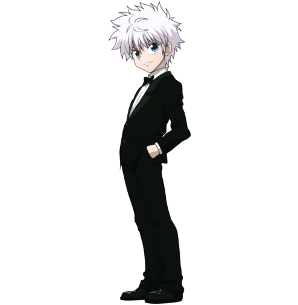
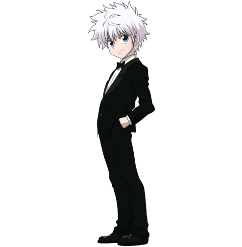

KILLUA ZOLDYCK
é um dos quatro protagonistas de Hunter × Hunter, um menino de 14 anos. É o terceiro filho dos cinco da famosa família de assassinos Zaoldyeck. É o melhor amigo de Gon, que conheceu durante o Exame Hunter 287.
é um dos quatro protagonistas de Hunter × Hunter, um menino de 14 anos. É o terceiro filho dos cinco da famosa família de assassinos Zaoldyeck. É o melhor amigo de Gon, que conheceu durante o Exame Hunter 287.
